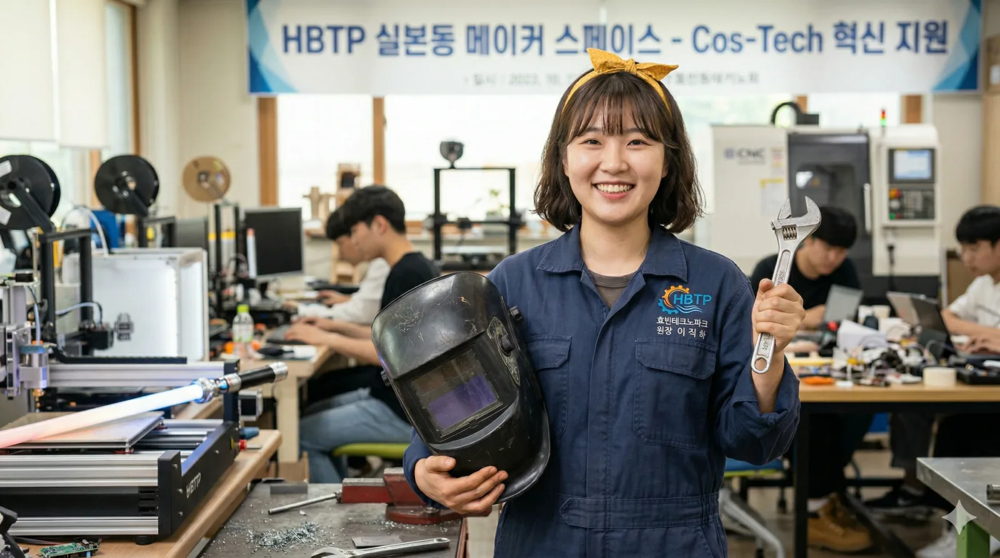

| 이름 | 이직하 (Lee Chi-ka) 李直夏 |
|---|---|
| 출생 | 1989년 5월 29일 (만 37세) 당시 효빈직할시 북구 중수동 (현 효빈광역시 북구 중수동) |
| 국적 | 대한민국 |
| 학력 | 효빈중수여자고등학교 (제12회 졸업) 효빈대학교 공과대학 (기계공학 / 학사) 효빈대학교 대학원 (신소재공학 / 박사) |
| 현직 | 효빈테크노파크 제8대 원장 (2023.09 ~ ) |
| 가족 | 언니 이세희 |
| 별명 | TP의 성모, 실본동 노란 리본(도리토스) 스타트업의 큰언니, 드럼 치는 공학박사 |
| MBTI | ENFJ |
대한민국의 신소재공학 박사이자 현 효빈광역시의 첨단 산업을 견인하는 효빈테크노파크(HBTP) 제8대 원장.
1989년생 북구 중수동 출신의 '효빈 토박이' 공학자. 과거 무겁고 딱딱한 금형, 주물 중심의 제조업 기관이었던 테크노파크를, 서브컬처 산업(코스프레 소품, 3D 프린팅 굿즈, 버추얼 스튜디오)과 첨단 기술이 융합하는 'Cos-Tech(코스프레+테크)'의 심장부로 대개조한 장본인이다.
항상 머리에 묶고 다니는 노란색 리본(마치 나초 칩을 연상시키는 형태)이 트레이드마크이며, 밝고 긍정적인 '햇살 에너지'를 뿜어내 입주 스타트업들의 멘탈 케어까지 담당하여 관내에서는 'TP의 성모' 혹은 '스타트업의 큰언니'로 칭송받는다.
하지만 그 발랄함 이면에는 이세희 HSCO 대표의 친동생다운 꺾이지 않는 강단과, 화가 나면 용접 토치를 들고 불꽃을 뿜어내는 '매드 사이언티스트'의 광기(...)가 숨어 있다. 건드리면 3D 프린터로 당신의 흑역사를 1:1 비율로 출력해 버릴지도 모른다.
"포기하면 안 돼! 실패는 다음 곡을 위한 드럼 필인(Fill-in) 같은 거니까! 내가 도와줄 테니 한 번 더 가보자구!"
1989년 효빈직할시 북구 중수동의 화목한 가정에서 태어났다. 5살 터울의 친언니인 이세희의 뒤를 이어 명문 효빈중수여자고등학교에 진학했다. 당시 중수여고의 전설로 군림하던 언니가 세운 밴드부 'STARRY'에 가입해 드럼 파트를 이어받았다.
언니가 다가갈 수 없는 차가운 '얼음마녀' 포지션이었다면, 직하는 누구에게나 밝게 인사하고 매점 빵을 나눠주는 '태양광 발전기' 포지션으로 후배들의 열렬한 팬덤을 몰고 다녔다. [1]
음악과 기계 조립을 좋아하던 밝은 여고생의 삶에 거대한 폭풍이 닥친 건 2006년이다. 자매의 아버지는 효빈테크노파크 초창기 설립 멤버였던 엘리트 공학자였으나, 최악의 암군 윤대환 시장이 취임하면서 모든 것이 무너졌다.
윤대환은 테크노파크의 예산을 삭감하고, 첨단 연구 동을 자신의 일가 기업인 두청운수의 사설 버스 정비소로 강제 개조해 버렸다. 이 정책에 결사반대하던 아버지는 직위 해제된 채 버스 엔진의 기름때를 닦는 굴욕적인 업무를 강요당하다 결국 병을 얻어 쓰러지고 만다.
이때 고등학생이었던 이직하는 텅 빈 연구실에서 아버지의 부서진 안전모를 안고 "정치가 짓밟은 기술의 가치를, 내 손으로 반드시 되찾고야 말겠다"며 피눈물을 흘렸다. 이 사건을 기점으로 그녀는 음악의 길을 잠시 접고, 효빈대학교 기계공학과에 진학해 미친 듯이 학업에 매달려 신소재공학 박사 학위까지 거머쥐는 집념을 보여준다.
대학원 시절, 교내 메이커 스페이스에서 'Cos-Tech(코스프레+기술) 창업 동아리'를 운영하던 중, 당시 타 단과대생이던 박효빈을 만났다.
어느 날 박효빈이 동아리방 문을 박차고 들어와 "효빈시를 세계 최고의 서브컬처 스마트 시티로 만들 거다! 그러기 위해선 이 LED 발광 초경량 대검 프로토타입이 필요하다!"라며 허접한 손그림 설계도를 들이밀었다. 다른 공대생들은 "어디서 중2병 환자가 왔냐"며 쫓아내려 했지만, 오직 이직하만이 도면을 유심히 보더니 "에?! 무리일지도 모르지만... 견적은 나오겠네요! 제가 깎아볼게요!"라며 즉석에서 선반을 돌리고 3D 프린터를 세팅해 단 하루 만에 완벽한 시제품을 뽑아주었다.
이 사건으로 엄청난 감명을 받은 박효빈은 훗날 시장에 당선되자마자, "효빈시의 하드웨어는 무조건 이직하가 맡아야 한다"며 시의회의 반발을 뚫고 30대 초반의 그녀를 테크노파크 원장으로 파격 발탁했다.
그녀는 HBTP를 딱딱한 공공기관이 아닌 하나의 거대한 인디 밴드처럼 이끈다. 스타트업 하나하나가 악기 파트고, 자신이 그들을 조율하는 드러머라는 마인드다.
극우 시민단체 대표 이차야가 HBTP 메이커 스페이스에 난입해 "이 기계로 음란한 인형(미소녀 피규어)을 찍어내고 있다! 이건 사탄의 도구다!"라며 억지를 부리고 고가의 산업용 3D 프린터를 쇠파이프로 부수려 한 사건.
현장에 있던 이직하 원장은 평소의 상냥함은 온데간데없이, 가스 밸브를 열고 불이 켜진 3,000도의 용접 토치를 든 채 이차야 앞을 가로막았다.
"기계는 죄가 없어! 그리고 우리 입주 기업들의 피와 땀을 모욕하지 마!!!"라는 처절한 분노의 샤우팅과 함께, 얼굴 바로 앞까지 다가온 시퍼런 용접 불꽃의 열기에 기겁한 이차야는 "저, 저... 마녀의 앞잡이!"라며 오줌을 지리며 도망쳤다. 이차야 전담 화염방사병. 이 사건을 계기로 TP 입주 기업들의 원장님 충성도는 거의 종교 수준이 되었다.
탁민석 애니메이션본부 이사장이 "효빈역 광장에 1:1 사이즈 거대 메카를 세우자"는 미친 기획안을 들고 왔을 때의 일이다. 시청 예산과 직원들이 거품을 물며 반대할 때, 이직하 원장은 오히려 눈을 반짝이며 "에?! 하중 설계랑 티타늄 합금 프레임만 지원되면 관절 구동도 가능할지도?!"라며 진지하게 설계도와 풍동 실험 시뮬레이션을 돌려버렸다.
결국 예산이 3조 원 단위로 치솟자 빡친 이세희 대표가 "바보 직하! 쓸데없는 짓 하지 마!"라며 등짝을 스매싱하면서 프로젝트는 강제 중단되었다. 공학도의 로망을 짓밟힌 직하는 3일간 드럼만 쳤다.
이세희 (HSCO 대표이사): 사랑하는 친언니. 피도 눈물도 없는 '얼음마녀' 세희 앞에서도 영락없는 덜렁이 동생 모드로 "언니이이이~ 예산 좀 땡겨줘!" 하고 매달린다. 언니에게 구박을 받으면서도 세상에서 제일 존경한다. 실제로 TP 소속 스타트업들이 박람회 부스를 못 구하면, 언니 세희가 몰래 HSCO의 알짜배기 부스를 빼주어 지원해 주는 환상의 자매 시너지를 보여준다.
고하나 (효빈디자인진흥원장): 관공서 연합 밴드의 봇치... 아니, 리드 기타리스트. 대인기피증으로 책상 밑에 숨어있는 하나를 억지로 끄집어내어 무대에 세우는 장본인이다. 직하가 텐션을 주체 못 하고 껴안으려 들면 하나는 액체 슬라임처럼 녹아내리지만, 음악적으로나 업무적으로(설계-디자인) 최고의 궁합을 자랑한다.
천리나 (효빈정보산업진흥원장): 리나가 코딩한 소프트웨어(AI)를 직하가 하드웨어(로봇 프레임)로 구현하는 효빈시 최강의 '문과 출입 금지' 이과 콤비. "내가 뼈대를 깎을 테니 네가 뇌를 코딩해 줘!"라는 식이다. 다만 리나 역시 극심한 내향인이라, 직하 언니가 헥헥거리며 다가오면 리나쨩 보드에 ( > < ) 표정을 띄우며 도망가기 바쁘다.
이미사 (효빈광역시사회서비스원장): 80년대생(88년, 89년) 동년배로서 아주 절친한 사이. 격무와 쇳가루에 지친 직하에게 미사가 구워오는 버터 쿠키는 가장 강력한 HP 회복 포션이다.
머리에 항상 묶고 다니는 트레이드마크인 노란색 리본(혹은 더듬이 묶음 머리). 관내에서는 이 리본이 단순한 천 쪼가리가 아니라, HBTP 특화산업본부에서 극비리에 개발한 '뇌파 연동 정전기 방지 스마트 웨어러블 디바이스' 시제품이라는 흉흉한 소문이 있다.
실제로 컨디션이 안 좋으면 리본 끝이 살짝 처지거나, 스트레스를 받으면 미세하게 정전기 스파크가 튀는 모습이 여러 번 목격되었다고 한다. [2]
스트레스가 극에 달하면 진흥원 지하의 진동 차폐 방음실에 틀어박혀 드럼을 친다. 이때만큼은 평소의 상냥한 모습은 온데간데없고, 마치 푸른 번개가 내리꽂히는 듯한 미친듯한 더블 킥과 블래스트 비트를 뿜어낸다. 이 상태의 직하는 그 친언니인 이세희조차 건드리지 않고 조용히 방문을 닫아준다고 한다.
본인 명의로 '코스프레 소품용 초경량 폴리머-형상기억합금' 기술 특허를 보유하고 있다. 진짜 강철 대검의 질감과 광택을 완벽하게 내면서도 무게는 스티로폼 수준이라, HAF에 참가하는 중무장 코스어들에게 "직하 님은 코스프레계의 노벨상 수상자"라며 종교 지도자급 추앙을 받고 있다.